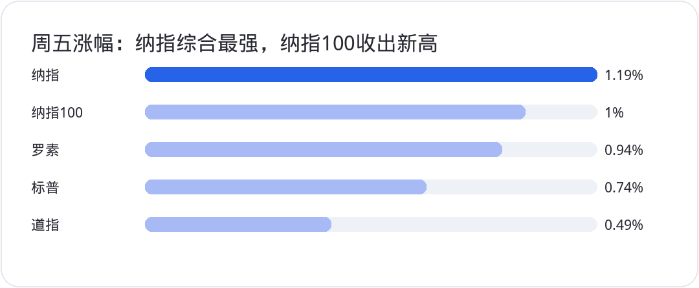
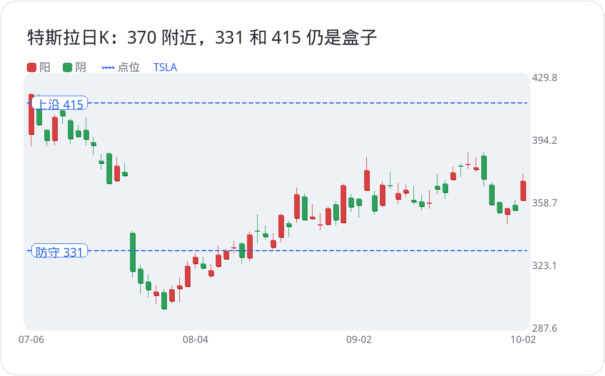
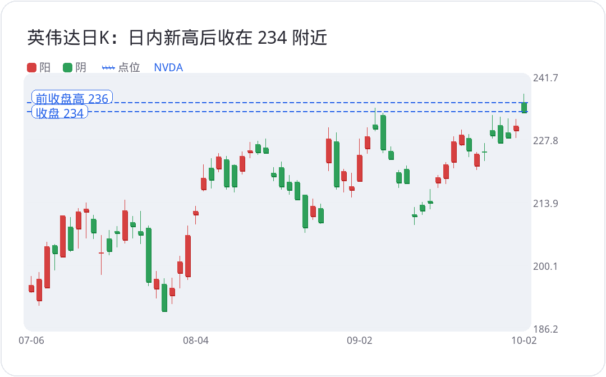

<div style="margin:0;padding:0;background:#f5f7fa;color:#2a2a34;font-size:16px;line-height:1.9;font-family:-apple-system,BlinkMacSystemFont,'SF Pro Text','PingFang SC','Hiragino Sans GB','Microsoft YaHei',Arial,sans-serif;font-variant-numeric:tabular-nums;font-feature-settings:'tnum' 1,'lnum' 1;text-align:left !important;text-align-last:left;letter-spacing:0;word-spacing:normal;white-space:normal;word-break:normal;box-sizing:border-box;"><div style="margin:0;background:#ffffff;padding:28px 22px 44px 22px;box-sizing:border-box;text-align:left !important;text-align-last:left;letter-spacing:0;word-spacing:normal;white-space:normal;word-break:normal;"><p style="display:block;width:100%;margin:0 0 12px 0;padding:0;color:#2763e9;font-size:10px;line-height:1.6;font-weight:650;letter-spacing:0.12em;text-align:center !important;text-align-last:center;word-spacing:normal;white-space:normal;word-break:normal;box-sizing:border-box;">美股 · 期权 · 资讯 · 观点</p><div style="margin:0 0 30px 0;padding:0;text-align:center !important;text-align-last:center;word-spacing:normal;white-space:normal;word-break:normal;box-sizing:border-box;"></div><div style="margin:0 0 0 0;padding:28px 0 0 0;text-align:left !important;text-align-last:left;letter-spacing:0;word-spacing:normal;white-space:normal;word-break:normal;box-sizing:border-box;"><div style="margin:0 0 12px 0;padding:0;text-align:left !important;line-height:1.2;border:0;display:flex;align-items:center;gap:10px;text-align-last:left;letter-spacing:0;word-spacing:normal;white-space:normal;word-break:normal;box-sizing:border-box;"><span style="display:inline-block;flex:0 0 auto;vertical-align:middle;color:#2763e9;font-size:12px;font-weight:850;letter-spacing:0.12em;line-height:1.2;text-transform:uppercase;border:0;box-sizing:border-box;">0 · FOCUS</span><span style="display:block;flex:1 1 auto;min-width:36px;vertical-align:middle;height:1px;margin:0 0 2px 0;background:#2763e9;line-height:1px;font-size:0;border:0;box-sizing:border-box;"></span></div><p style="margin:0 0 16px 0;padding:0;color:#2a2a34;font-size:22px;line-height:1.45;font-weight:850;text-align:left !important;letter-spacing:0;text-align-last:left;word-spacing:normal;white-space:normal;word-break:normal;box-sizing:border-box;">纳指 100 收出新高，长端没有配合</p><p style="margin:0 0 16px 0;padding:0;color:#454550;font-size:16px;line-height:1.9;font-weight:400;text-align:left !important;letter-spacing:0;word-spacing:normal;white-space:normal;word-break:normal;text-align-last:left;box-sizing:border-box;">周五四大指数都收涨。道指收在 51182.11，涨 0.49%；标普收在 7722.85，涨 0.74%；罗素 2000 涨 0.94%；纳斯达克综合指数收在 27190.86，涨 1.19%。纳指 100 收在 30807.93，涨 1.00%，这是收盘历史新高。<strong style="color:#2a2a34;font-weight:700;box-sizing:border-box;">QQQ</strong> 来到 749 附近，同样收在新高。标普里上涨的个股接近 300 只，下跌的大约 200 只。领涨的是科技和非必需消费。费城半导体跟随 <strong style="color:#2a2a34;font-weight:700;box-sizing:border-box;">SMH</strong> 完成突破。</p><p style="margin:0 0 16px 0;padding:0;color:#454550;font-size:16px;line-height:1.9;font-weight:400;text-align:left !important;letter-spacing:0;word-spacing:normal;white-space:normal;word-break:normal;text-align-last:left;box-sizing:border-box;">债券没有跟着庆祝。十年期早盘先下，收盘涨回去，大约 5.29%，比周四还高。股票拿的是加息预期降温，债市拿的是通胀和加息路径还没结束。新高成立，配合不完整。</p><p style="margin:0 0 16px 0;padding:0;color:#454550;font-size:16px;line-height:1.9;font-weight:400;text-align:left !important;letter-spacing:0;word-spacing:normal;white-space:normal;word-break:normal;text-align-last:left;box-sizing:border-box;">10 月仍是大波动月份。方向往上，振幅会大，不是一根直线。系统化趋势资金在上涨和横盘里以买为主，9 月已经卖过一轮，不大跌他们不会再砸。</p><p style="margin:4px 0 16px 0;padding:0;text-align:center !important;text-align-last:center;word-spacing:normal;white-space:normal;word-break:normal;box-sizing:border-box;"></p></div><div style="margin:30px 0 0 0;padding:28px 0 0 0;text-align:left !important;text-align-last:left;letter-spacing:0;word-spacing:normal;white-space:normal;word-break:normal;box-sizing:border-box;"><div style="margin:0 0 12px 0;padding:0;text-align:left !important;line-height:1.2;border:0;display:flex;align-items:center;gap:10px;text-align-last:left;letter-spacing:0;word-spacing:normal;white-space:normal;word-break:normal;box-sizing:border-box;"><span style="display:inline-block;flex:0 0 auto;vertical-align:middle;color:#2763e9;font-size:12px;font-weight:850;letter-spacing:0.12em;line-height:1.2;text-transform:uppercase;border:0;box-sizing:border-box;">1 · FOCUS</span><span style="display:block;flex:1 1 auto;min-width:36px;vertical-align:middle;height:1px;margin:0 0 2px 0;background:#2763e9;line-height:1px;font-size:0;border:0;box-sizing:border-box;"></span></div><p style="margin:0 0 16px 0;padding:0;color:#2a2a34;font-size:22px;line-height:1.45;font-weight:850;text-align:left !important;letter-spacing:0;text-align-last:left;word-spacing:normal;white-space:normal;word-break:normal;box-sizing:border-box;">非农 2.9 万，10 月加息从两成掉到一成出头</p><p style="margin:0 0 16px 0;padding:0;color:#454550;font-size:16px;line-height:1.9;font-weight:400;text-align:left !important;letter-spacing:0;word-spacing:normal;white-space:normal;word-break:normal;text-align-last:left;box-sizing:border-box;">9 月非农只新增 2.9 万个岗位，预期是 9 万。8 月从原先的 16.2 万下修到 13.3 万。7 月和 8 月合计再下修 6 万。失业率从 4.1% 升到 4.2%，劳动参与率从 61.6% 升到 61.8%。私营部门加了 4.6 万，政府减了 1.7 万。时薪月增 0.1%，预期 0.3%；同比 3.0%，预期 3.2%。</p><p style="margin:0 0 16px 0;padding:0;color:#454550;font-size:16px;line-height:1.9;font-weight:400;text-align:left !important;letter-spacing:0;word-spacing:normal;white-space:normal;word-break:normal;text-align-last:left;box-sizing:border-box;">劳动力市场没有预期里那么强。报告前，10 月加息的概率大约 22%；报告后，利率期货压到大约 13%。如果 8 月一开始就报 13.3 万而不是 16.2 万，9 月那次加息本身就未必发生。修正大到可以改掉一次会议的决定，初值只能当草稿。</p></div><div style="margin:30px 0 0 0;padding:28px 0 0 0;text-align:left !important;text-align-last:left;letter-spacing:0;word-spacing:normal;white-space:normal;word-break:normal;box-sizing:border-box;"><div style="margin:0 0 12px 0;padding:0;text-align:left !important;line-height:1.2;border:0;display:flex;align-items:center;gap:10px;text-align-last:left;letter-spacing:0;word-spacing:normal;white-space:normal;word-break:normal;box-sizing:border-box;"><span style="display:inline-block;flex:0 0 auto;vertical-align:middle;color:#2763e9;font-size:12px;font-weight:850;letter-spacing:0.12em;line-height:1.2;text-transform:uppercase;border:0;box-sizing:border-box;">2 · FOCUS</span><span style="display:block;flex:1 1 auto;min-width:36px;vertical-align:middle;height:1px;margin:0 0 2px 0;background:#2763e9;line-height:1px;font-size:0;border:0;box-sizing:border-box;"></span></div><p style="margin:0 0 16px 0;padding:0;color:#2a2a34;font-size:22px;line-height:1.45;font-weight:850;text-align:left !important;letter-spacing:0;text-align-last:left;word-spacing:normal;white-space:normal;word-break:normal;box-sizing:border-box;">特斯拉交付超预期，图还在 331 到 415</p><p style="margin:0 0 16px 0;padding:0;color:#454550;font-size:16px;line-height:1.9;font-weight:400;text-align:left !important;letter-spacing:0;word-spacing:normal;white-space:normal;word-break:normal;text-align-last:left;box-sizing:border-box;"><strong style="color:#2a2a34;font-weight:700;box-sizing:border-box;">TSLA</strong> 三季度交付 486532 辆。公司汇编的卖方预期是 461974 辆，高出大约 24558 辆，增幅 5.3%。Model 3 和 Model Y 占了 478237 辆。产量 464391 辆，交付多于生产。同比仍少大约 2%，去年同期是 497099 辆。储能部署 13.7 吉瓦时，低于汇编预期的 15.9。车超了，储能没超。财报在 10 月 21 日盘后。</p><p style="margin:0 0 16px 0;padding:0;color:#454550;font-size:16px;line-height:1.9;font-weight:400;text-align:left !important;letter-spacing:0;word-spacing:normal;white-space:normal;word-break:normal;text-align-last:left;box-sizing:border-box;">价格还在老区间里。最短防守看 331，上方第一道是 415，区间上沿到 465。此前高点接近 400，周三出过一个止跌，周五涨了 4 个多点，回到 370 附近。觉得 331 的止损够近、415 的空间够用，可以当波段。不愿意做，就继续等。这不是长线位置。415 到 465 不过，打上去仍可能被压回下沿。过了，才谈新高。</p><p style="margin:4px 0 16px 0;padding:0;text-align:center !important;text-align-last:center;word-spacing:normal;white-space:normal;word-break:normal;box-sizing:border-box;"></p></div><div style="margin:30px 0 0 0;padding:28px 0 0 0;text-align:left !important;text-align-last:left;letter-spacing:0;word-spacing:normal;white-space:normal;word-break:normal;box-sizing:border-box;"><div style="margin:0 0 12px 0;padding:0;text-align:left !important;line-height:1.2;border:0;display:flex;align-items:center;gap:10px;text-align-last:left;letter-spacing:0;word-spacing:normal;white-space:normal;word-break:normal;box-sizing:border-box;"><span style="display:inline-block;flex:0 0 auto;vertical-align:middle;color:#2763e9;font-size:12px;font-weight:850;letter-spacing:0.12em;line-height:1.2;text-transform:uppercase;border:0;box-sizing:border-box;">3 · SEMIS</span><span style="display:block;flex:1 1 auto;min-width:36px;vertical-align:middle;height:1px;margin:0 0 2px 0;background:#2763e9;line-height:1px;font-size:0;border:0;box-sizing:border-box;"></span></div><p style="margin:0 0 16px 0;padding:0;color:#2a2a34;font-size:22px;line-height:1.45;font-weight:850;text-align:left !important;letter-spacing:0;text-align-last:left;word-spacing:normal;white-space:normal;word-break:normal;box-sizing:border-box;">亚马逊想把 80 亿美元芯片卖出表外</p><p style="margin:0 0 16px 0;padding:0;color:#454550;font-size:16px;line-height:1.9;font-weight:400;text-align:left !important;letter-spacing:0;word-spacing:normal;white-space:normal;word-break:normal;text-align-last:left;box-sizing:border-box;"><strong style="color:#2a2a34;font-weight:700;box-sizing:border-box;">AMZN</strong> 的位置判断没变，仍是长线，不是今天要改的结论。变的是资产负债表的做法。英国《金融时报》报道，亚马逊最近几周在和投资者谈，把大约 80 亿美元的英伟达 Grace Blackwell 芯片放进一家特殊目的公司。这家公司举债买下芯片，再租回给亚马逊。亚马逊自己不持股，最多给这家载体 10% 的权益。芯片已经部署在美国十几个数据中心。谈判还在进行，方案可以改。</p><p style="margin:0 0 16px 0;padding:0;color:#454550;font-size:16px;line-height:1.9;font-weight:400;text-align:left !important;letter-spacing:0;word-spacing:normal;white-space:normal;word-break:normal;text-align-last:left;box-sizing:border-box;">目的写得很直：把资产负债表做轻，把折旧和债务挪到表外，保住信用评级。以后付的是租金，不再把这批芯片的折旧留在自己账上。</p><p style="margin:0 0 16px 0;padding:0;color:#454550;font-size:16px;line-height:1.9;font-weight:400;text-align:left !important;letter-spacing:0;word-spacing:normal;white-space:normal;word-break:normal;text-align-last:left;box-sizing:border-box;">这和英伟达那条循环融资是反的。英伟达是把钱直接或间接给到客户，客户再回头买芯片，收入可以做高。亚马逊是在资产还值钱的时候把它卖掉，支出以后用租金来走。历史上，客户融资买设备，思科在 2000 年互联网泡沫后从高点跌掉大约 90%。把问题挪到表外，安然在 2001 年因为收入盖不住表外负债而破产。这两个名字是机制对照，不是在预言同样的结局。结构本身可以合法，披露了就不是隐藏。</p><p style="margin:0 0 16px 0;padding:0;color:#454550;font-size:16px;line-height:1.9;font-weight:400;text-align:left !important;letter-spacing:0;word-spacing:normal;white-space:normal;word-break:normal;text-align-last:left;box-sizing:border-box;">行业收入还在涨、流动性还接得上的时候，这就是经营杠杆：把近处的折旧换成未来的现金。现金流或者全行业收入一旦低于预期，表外的租金会变成真实约束。优质公司现阶段的长线看法可以继续留着。留着的条件是公开的资产负债表和业绩还对得上，不是热度本身。表外转移不是亚马逊一家在做。车要开进沟里，再好的故事也要下车。</p><p style="margin:0 0 16px 0;padding:0;color:#454550;font-size:16px;line-height:1.9;font-weight:400;text-align:left !important;letter-spacing:0;word-spacing:normal;white-space:normal;word-break:normal;text-align-last:left;box-sizing:border-box;"><strong style="color:#2a2a34;font-weight:700;box-sizing:border-box;">NVDA</strong> 周五盘中创出日内新高，高点大约 238，收回来收在 234 附近。收盘价还没站上此前大约 235 到 236 的收盘高点，离得不远。很多股票高开之后回撤，收到近期高位就先当中性，不当成很强的见顶。</p><p style="margin:4px 0 16px 0;padding:0;text-align:center !important;text-align-last:center;word-spacing:normal;white-space:normal;word-break:normal;box-sizing:border-box;"></p></div><div style="margin:30px 0 0 0;padding:28px 0 0 0;text-align:left !important;text-align-last:left;letter-spacing:0;word-spacing:normal;white-space:normal;word-break:normal;box-sizing:border-box;"><div style="margin:0 0 12px 0;padding:0;text-align:left !important;line-height:1.2;border:0;display:flex;align-items:center;gap:10px;text-align-last:left;letter-spacing:0;word-spacing:normal;white-space:normal;word-break:normal;box-sizing:border-box;"><span style="display:inline-block;flex:0 0 auto;vertical-align:middle;color:#2763e9;font-size:12px;font-weight:850;letter-spacing:0.12em;line-height:1.2;text-transform:uppercase;border:0;box-sizing:border-box;">4 · SEMIS</span><span style="display:block;flex:1 1 auto;min-width:36px;vertical-align:middle;height:1px;margin:0 0 2px 0;background:#2763e9;line-height:1px;font-size:0;border:0;box-sizing:border-box;"></span></div><p style="margin:0 0 16px 0;padding:0;color:#2a2a34;font-size:22px;line-height:1.45;font-weight:850;text-align:left !important;letter-spacing:0;text-align-last:left;word-spacing:normal;white-space:normal;word-break:normal;box-sizing:border-box;">费半突破了，背离没有一起修好</p><p style="margin:0 0 16px 0;padding:0;color:#454550;font-size:16px;line-height:1.9;font-weight:400;text-align:left !important;letter-spacing:0;word-spacing:normal;white-space:normal;word-break:normal;text-align-last:left;box-sizing:border-box;"><strong style="color:#2a2a34;font-weight:700;box-sizing:border-box;">SOXX</strong> 昨天还差一点点。周五直接高开到 590，和 <strong style="color:#2a2a34;font-weight:700;box-sizing:border-box;">SMH</strong> 一样完成突破。突破之后是缓慢看前高、看新高：低点抬高，高点抬高，螺旋走，不是一根直线。第二天回撤，不否定突破，只说明路径不是日内拉直。</p><p style="margin:0 0 16px 0;padding:0;color:#454550;font-size:16px;line-height:1.9;font-weight:400;text-align:left !important;letter-spacing:0;word-spacing:normal;white-space:normal;word-break:normal;text-align-last:left;box-sizing:border-box;">瑕疵还在。<strong style="color:#2a2a34;font-weight:700;box-sizing:border-box;">SOXX</strong> 日线 RSI 顶背离没有消失。<strong style="color:#2a2a34;font-weight:700;box-sizing:border-box;">SMH</strong> 的顶背离在周五这根大阳里修掉了，代价是超买。修完背离，下一步常常要修超买，后面仍会有回撤。今天收在近期新高，不能把这根阳线当成回撤顶部的证据。趋势转成抬高低点之后，回撤可以拿着。为了零点几个点去抢进出，不值得。</p></div><div style="margin:30px 0 0 0;padding:28px 0 0 0;text-align:left !important;text-align-last:left;letter-spacing:0;word-spacing:normal;white-space:normal;word-break:normal;box-sizing:border-box;"><div style="margin:0 0 12px 0;padding:0;text-align:left !important;line-height:1.2;border:0;display:flex;align-items:center;gap:10px;text-align-last:left;letter-spacing:0;word-spacing:normal;white-space:normal;word-break:normal;box-sizing:border-box;"><span style="display:inline-block;flex:0 0 auto;vertical-align:middle;color:#2763e9;font-size:12px;font-weight:850;letter-spacing:0.12em;line-height:1.2;text-transform:uppercase;border:0;box-sizing:border-box;">5 · SOFTWARE</span><span style="display:block;flex:1 1 auto;min-width:36px;vertical-align:middle;height:1px;margin:0 0 2px 0;background:#2763e9;line-height:1px;font-size:0;border:0;box-sizing:border-box;"></span></div><p style="margin:0 0 16px 0;padding:0;color:#2a2a34;font-size:22px;line-height:1.45;font-weight:850;text-align:left !important;letter-spacing:0;text-align-last:left;word-spacing:normal;white-space:normal;word-break:normal;box-sizing:border-box;">APP 到了下一层，破了往 180 看</p><p style="margin:0 0 16px 0;padding:0;color:#454550;font-size:16px;line-height:1.9;font-weight:400;text-align:left !important;letter-spacing:0;word-spacing:normal;white-space:normal;word-break:normal;text-align-last:left;box-sizing:border-box;"><strong style="color:#2a2a34;font-weight:700;box-sizing:border-box;">APP</strong> 8 月标过的防守是 317 和 353。317 破了就该避险。它后来没有回到 353 上方，反弹一直受压，最近又吃了消息面利空。现价已经落在 252 到 297。</p><p style="margin:0 0 16px 0;padding:0;color:#454550;font-size:16px;line-height:1.9;font-weight:400;text-align:left !important;letter-spacing:0;word-spacing:normal;white-space:normal;word-break:normal;text-align-last:left;box-sizing:border-box;">这一层守住，可以是阶段底部，横完再看反弹和基本面。走破，下面是技术真空，下看 180 下方。没破之前，不用在已经错过的 317 上再减一次，减晚了。今天有抵抗，收盘却是新低，止跌的有效性不强。还拿着、之前没避险的，就看这一层能不能真的止住。</p></div><div style="margin:30px 0 0 0;padding:28px 0 0 0;text-align:left !important;text-align-last:left;letter-spacing:0;word-spacing:normal;white-space:normal;word-break:normal;box-sizing:border-box;"><div style="margin:0 0 12px 0;padding:0;text-align:left !important;line-height:1.2;border:0;display:flex;align-items:center;gap:10px;text-align-last:left;letter-spacing:0;word-spacing:normal;white-space:normal;word-break:normal;box-sizing:border-box;"><span style="display:inline-block;flex:0 0 auto;vertical-align:middle;color:#2763e9;font-size:12px;font-weight:850;letter-spacing:0.12em;line-height:1.2;text-transform:uppercase;border:0;box-sizing:border-box;">6 · FOCUS</span><span style="display:block;flex:1 1 auto;min-width:36px;vertical-align:middle;height:1px;margin:0 0 2px 0;background:#2763e9;line-height:1px;font-size:0;border:0;box-sizing:border-box;"></span></div><p style="margin:0 0 16px 0;padding:0;color:#2a2a34;font-size:22px;line-height:1.45;font-weight:850;text-align:left !important;letter-spacing:0;text-align-last:left;word-spacing:normal;white-space:normal;word-break:normal;box-sizing:border-box;">三条路</p><p style="margin:0 0 16px 0;padding:0;color:#454550;font-size:16px;line-height:1.9;font-weight:400;text-align:left !important;letter-spacing:0;word-spacing:normal;white-space:normal;word-break:normal;text-align-last:left;box-sizing:border-box;">偏多：非农继续把 10 月加息压在一成出头，<strong style="color:#2a2a34;font-weight:700;box-sizing:border-box;">QQQ</strong> 守住 749 一带的收盘新高，<strong style="color:#2a2a34;font-weight:700;box-sizing:border-box;">SOXX</strong> 和 <strong style="color:#2a2a34;font-weight:700;box-sizing:border-box;">SMH</strong> 回撤不跌回突破位。螺旋上行可以拿。十年期如果从 5.29% 退回去，新高的配合才算齐。</p><p style="margin:0 0 16px 0;padding:0;color:#454550;font-size:16px;line-height:1.9;font-weight:400;text-align:left !important;letter-spacing:0;word-spacing:normal;white-space:normal;word-break:normal;text-align-last:left;box-sizing:border-box;">中性：指数新高还在，十年期停在 5.3% 附近。<strong style="color:#2a2a34;font-weight:700;box-sizing:border-box;">TSLA</strong> 留在 331 到 415 的盒子里，<strong style="color:#2a2a34;font-weight:700;box-sizing:border-box;">NVDA</strong> 收盘仍摸不到 236。突破成立，但不追直线。</p><p style="margin:0 0 16px 0;padding:0;color:#454550;font-size:16px;line-height:1.9;font-weight:400;text-align:left !important;letter-spacing:0;word-spacing:normal;white-space:normal;word-break:normal;text-align-last:left;box-sizing:border-box;">偏空：十年期站稳 5.3% 之上，<strong style="color:#2a2a34;font-weight:700;box-sizing:border-box;">SOXX</strong> 的顶背离开始兑现，<strong style="color:#2a2a34;font-weight:700;box-sizing:border-box;">APP</strong> 收破 252。亚马逊的芯片出表如果从谈判变成完成，而全行业收入同时放缓，表外租金就不再只是会计安排。</p></div><div style="margin:34px 0 0 0;padding:0;border:1px solid #e4e7ed;border-radius:24px;background:#fafbfc;text-align:center !important;box-sizing:border-box;overflow:hidden;text-align-last:center;word-spacing:normal;white-space:normal;word-break:normal;"><p style="margin:0;padding:18px 16px;color:#6a6a78;font-size:14px;line-height:1.8;text-align:center !important;background:#fafbfc;box-sizing:border-box;text-align-last:center;word-spacing:normal;white-space:normal;word-break:normal;">长按识别二维码关注公众号，持续获取每日美股资讯与观点。</p><p style="margin:0;text-align:center !important;background:#ffffff;box-sizing:border-box;text-align-last:center;word-spacing:normal;white-space:normal;word-break:normal;"></p></div><p style="margin:28px 0 0 0;padding:22px 0 0 0;color:#9a9aa8;font-size:12px;line-height:1.8;text-align:center !important;text-align-last:center;word-spacing:normal;white-space:normal;word-break:normal;box-sizing:border-box;">免责声明：本文仅为个人市场观察和交易复盘，不构成任何投资建议；市场有风险，交易需谨慎。</p></div></div>
